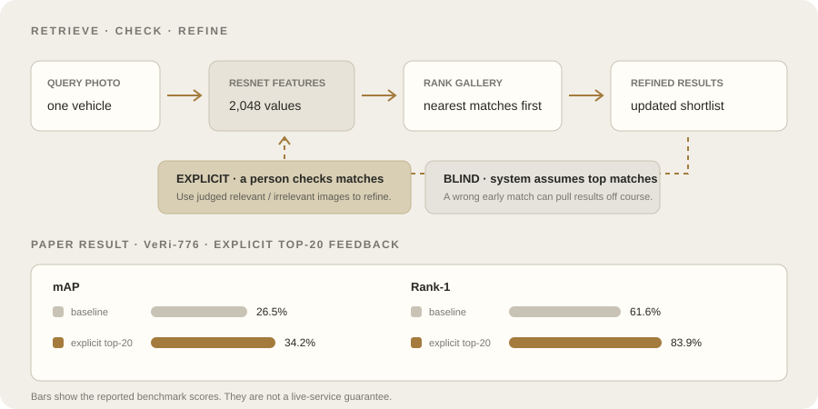

Problem
Vehicle re-identification starts with one query image and searches a gallery for other views of the same vehicle. A system may need to match the car across different cameras, angles, distances, lighting, and partial obstruction. Two different vehicles can look alike, while the same vehicle can look very different from another viewpoint.
The paper focuses on a practical follow-up question: after the system returns an initial ranked list, can information about those results improve the next search? This matters when a person can inspect a few candidates and correct the system, but it also raises a risk: if the system assumes its own first guesses are right, an early mistake may steer later results in the wrong direction.
Approach
The workflow has three parts: encode images, rank the gallery, and optionally refine the query.
- Encode: a ResNet feature extractor is trained with triplet loss and cross-entropy loss. Triplet loss pulls features for the same vehicle closer and pushes features for different vehicles apart; cross-entropy trains the identity classifier. After training, the classifier layer is removed and each image is stored as a 2,048-value feature vector.
- Rank: the system compares the query vector with precomputed gallery vectors using Euclidean distance. Smaller distance means a closer feature match, so that image appears higher in the list.
- Refine: the paper compares two feedback strategies. With explicit feedback, a person marks results as relevant or irrelevant, and relevant images help reformulate the query. With blind feedback, the system assumes the top n results are relevant and averages their features into the query without a person checking them.
The evaluation uses VeRi-776, a dataset of traffic images with 776 vehicle identities recorded by 20 cameras. Its test setup contains 1,678 query images and 11,579 gallery images representing 200 identities. The authors vary the feedback type and how many top results are used, then measure mean average precision (mAP) and Rank-k accuracy.
Explore the feedback experiment
Who decides whether the first matches are right?
Switch the feedback rule and the number of results used. The scores below are taken from the paper’s VeRi-776 experiment.
A person verifies the top 20 candidates before their features refine the query.
These are reported benchmark scores, not a running classifier. The paper reports quality metrics, not production latency or throughput.
Findings
Explicit feedback helped in this experiment, especially when the person could judge more of the top results. With the top 20 checked results, mAP rose from 26.5% to 34.2% and Rank-1 rose from 61.6% to 83.9%. mAP summarizes relevance across the ranked list; Rank-1 is the share of queries whose first result is correct.
Blind feedback had the opposite effect on this model. Assuming just the top result was correct reduced mAP to 7.4% and Rank-1 to 13.0%. The authors explain that the base ranking was not strong enough to make those automatic assumptions safe. Blind feedback can be faster because it needs no person in the loop, but this experiment shows the tradeoff: speed can amplify an incorrect match. It may be more appropriate when the initial ranking is already reliable, and should be tested on the target data.
The paper describes the approach as real-time, but the reported experiment measures retrieval quality, not end-to-end response time, throughput, or performance under live traffic load. Its benchmark improvements therefore do not establish that the implementation meets a production latency target.
Paper
“A Novel Approach for Real-Time Vehicle Re-identification Using Content-Based Image Retrieval with Relevance Feedback,” by N. Shankaranarayan and S. Sowmya Kamath. Machine Learning and Big Data Analytics, Springer Proceedings in Mathematics & Statistics 401, pp. 203–212, Springer, 7 June 2023.